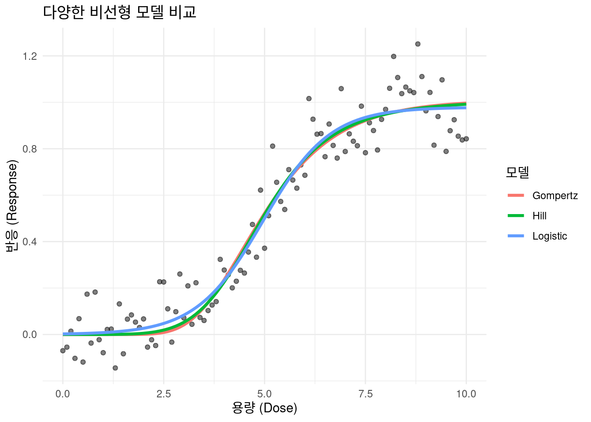
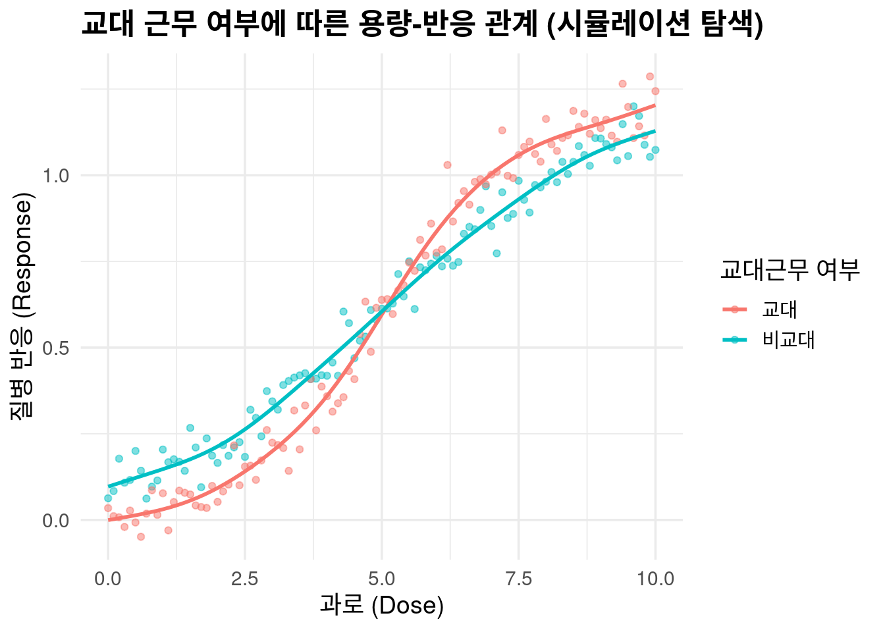
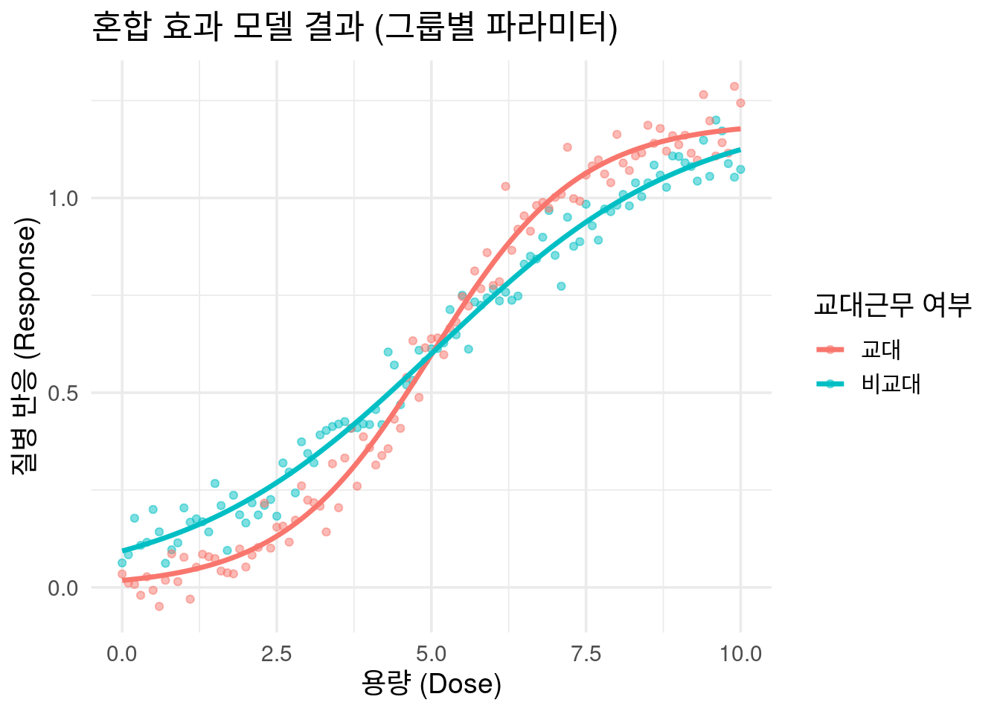

if(!require("tidyverse")) install.packages("tidyverse");library(tidyverse)
if(!require("nls.multstart")) install.packages("nls.multstart");library(nls.multstart)
if(!require("investr")) install.packages("investr");library(investr)
if(!require("nlme")) install.packages("nlme");library(nlme)
if(!require("boot")) install.packages("boot");library(boot)4 비선형 모델 비교과 MixedModel
이 챕터에서는 앞서 배운 기본적인 고퍼츠(Gompertz) 모델을 넘어, 실제 연구에서 마주하는 복잡한 상황을 다루는 방법을 알아봅니다. 특히, 여러 비선형 모델을 비교하고, 교대 근무와 같은 중요한 공변량이 용량-반응 관계에 미치는 영향을 어떻게 분석하는지 배울 것입니다.
4.1 여러 비선형 모델 비교 및 선택
용량-반응 관계는 언제나 S자형 곡선(Gompertz, Logistic)만 따르는 것은 아닙니다. 때로는 힐(Hill) 모델과 같이 민감도가 다른 곡선이 더 적합할 수 있습니다. 우리가 가진 데이터에 어떤 모델이 가장 잘 맞는지 평가하는 것은 매우 중요합니다.
4.1.1 모델 이론
로지스틱 모델: y(dose)=fraca1+exp(−b(dose−c))
S자형 곡선을 설명하는 가장 기본적인 모델입니다. 특히, 질병 발생 여부와 같은 이항형 결과를 다룰 때 많이 사용됩니다
a: 최대 반응값
b: 곡선의 기울기(성장률)
c: LD50(반응이 50%가 되는 용량)
힐 모델: y(dose)=fracacdotdosebcb+doseb
로지스틱 모델과 비슷하지만, 곡선의 기울기를 조절하는 파라미터가 추가되어, 용량-반응 관계의 민감도를 더 세밀하게 표현할 수 있습니다.
b: 힐 계수(Hill Coefficient), 곡선 기울기(민감도)
c: LD50(반응이 50%가 되는 용량)
4.1.2 실습: 모델 피팅 및 비교
세 가지 모델(Gompertz, Logistic, Hill)을 모두 데이터에 피팅하고, 통계적인 지표인 AIC(Akaike Information Criterion) 값을 비교하여 어떤 모델이 가장 적합한지 평가해 봅시다. AIC는 모델의 복잡성과 데이터에 대한 적합도를 동시에 고려하여, AIC 값이 가장 낮은 모델이 가장 좋은 모델입니다.
# Gompertz 모델 함수
gompertz <- function(dose, a, mu, lambda) {
a * exp(-exp(mu * exp(1) / a * (lambda - dose) + 1))
}
# 로지스틱 모델 함수
logistic <- function(dose, a, b, c) {
a / (1 + exp(-b * (dose - c)))
}
# 힐 모델 함수
hill <- function(dose, a, b, c) {
(a * dose^b) / (c^b + dose^b)
}
# LD50 계산 함수
ld50_logistic <- function(model) {
coefs <- coef(model)
ld50 <- coefs["c"]
return(ld50)
}
# 데이터 생성
set.seed(0)
dose <- seq(0, 10, 0.1)
pb <- c(rnorm(50, 0, 0.001), rnorm(30, 0, 0.01), rnorm(10, 0.1, 0.05), rnorm(11, -0.1, 0.05))
resp <- 1 / (1 + exp(-(dose - 5))) + rnorm(length(dose), 0, 0.1) + pb
cohort <- tibble(dose, resp)
# 여러 모델 피팅
nls_gompertz <- nls_multstart(
resp ~ gompertz(dose, a, mu, lambda),
data = cohort,
start_lower = c(a = 0, mu = 0, lambda = 0),
start_upper = c(a = 2, mu = 1, lambda = 10),
iter = 250 # iter 인자 추가
)Error in nlsModel(formula, mf, start, wts) :
singular gradient matrix at initial parameter estimates
Error in nlsModel(formula, mf, start, wts) :
singular gradient matrix at initial parameter estimates
Error in nlsModel(formula, mf, start, wts) :
singular gradient matrix at initial parameter estimates
Error in nlsModel(formula, mf, start, wts) :
singular gradient matrix at initial parameter estimatesnls_logistic <- nls_multstart(
resp ~ logistic(dose, a, b, c),
data = cohort,
start_lower = c(a = 0, b = 0, c = 0),
start_upper = c(a = 2, b = 1, c = 10),
iter = 250 # iter 인자 추가
)Error in nlsModel(formula, mf, start, wts) :
singular gradient matrix at initial parameter estimates
Error in nlsModel(formula, mf, start, wts) :
singular gradient matrix at initial parameter estimates
Error in nlsModel(formula, mf, start, wts) :
singular gradient matrix at initial parameter estimates
Error in nlsModel(formula, mf, start, wts) :
singular gradient matrix at initial parameter estimates
Error in nlsModel(formula, mf, start, wts) :
singular gradient matrix at initial parameter estimates
Error in nlsModel(formula, mf, start, wts) :
singular gradient matrix at initial parameter estimates
Error in nlsModel(formula, mf, start, wts) :
singular gradient matrix at initial parameter estimates
Error in nlsModel(formula, mf, start, wts) :
singular gradient matrix at initial parameter estimates
Error in nlsModel(formula, mf, start, wts) :
singular gradient matrix at initial parameter estimates
Error in nlsModel(formula, mf, start, wts) :
singular gradient matrix at initial parameter estimatesnls_hill <- nls_multstart(
resp ~ hill(dose, a, b, c),
data = cohort,
start_lower = c(a = 0, b = 0, c = 0),
start_upper = c(a = 2, b = 10, c = 10),
iter = 250 # iter 인자 추가
)# AIC 값 비교
aic_values <- AIC(nls_gompertz, nls_logistic, nls_hill)
print(aic_values) df AIC
nls_gompertz 4 -153.2274
nls_logistic 4 -160.6434
nls_hill 4 -156.0963제공된 코드의 AIC 비교 결과를 보면 다음과 같습니다.
| 모델 | AIC 값 |
| nls_gompertz | -153.2274 |
| nls_logistic | -160.6434 |
| nls_hill | -156.0963 |
이 결과를 보면
Logistic 모델의 AIC가 -160.6434로 가장 낮습니다. 이는 우리가 생성한 데이터에 대해 로지스틱 모델이 다른 두 모델보다 통계적으로 더 우수한 적합도를 보인다는 것을 의미합니다.
이 결과를 그래프로 시각화해 보면, 세 개의 곡선이 데이터에 어떻게 피팅되는지 한눈에 확인할 수 있습니다.
# 모든 모델을 한 그래프에 시각화
cohort_predicted <- cohort %>%
mutate(
Gompertz = predict(nls_gompertz),
Logistic = predict(nls_logistic),
Hill = predict(nls_hill)
) %>%
pivot_longer(
cols = c(Gompertz, Logistic, Hill),
names_to = "Model",
values_to = "Predicted_Response"
)
ggplot(cohort, aes(x = dose, y = resp)) +
geom_point(alpha = 0.5) +
geom_line(data = cohort_predicted, aes(y = Predicted_Response, color = Model), size = 1.2) +
labs(
title = "다양한 비선형 모델 비교",
x = "용량 (Dose)",
y = "반응 (Response)",
color = "모델"
) +
theme_minimal()
4.2 실제 데이터의 변수 고려: 공변량(Covariates) 분석
이제 한 걸음 더 나아가, 교대 근무와 같은 공변량이 용량-반응 관계에 어떤 영향을 미치는지 분석해 봅시다. 실제 직업 환경에서는 개인의 근무 형태나 생활 습관 등이 유해물질 노출에 대한 질병 반응에 영향을 줄 수 있습니다. 우리는 교대 근무 여부에 따라 과로와 질병 반응 간의 관계가 달라지는 상황을 시뮬레이션했습니다.
4.2.1 시뮬레이션: 공변량 효과
우리는 두 그룹의 가상 데이터를 만들었습니다.
비교대 근무자: 과로가 증가할수록 질병 반응이 선형적으로 증가하는 그룹입니다.
교대 근무자: 과로가 증가할수록 질병 반응이 고퍼츠 곡선을 따라 증가하는 그룹입니다. 즉, 특정 시점부터 질병 반응이 급격하게 증가하는 패턴을 보입니다.
혼합 효과 모델은 이 두 그룹의 관계를 하나의 통합된 모델로 분석하는 도구입니다.
# nlme 패키지 로드
library(nlme)
library(tidyverse)
# Gompertz 모델 함수
gompertz <- function(dose, a, mu, lambda) {
a / (1 + exp(-mu * (dose - lambda)))
}
# 데이터 생성
set.seed(123)
dose <- seq(0, 10, 0.1)
n_dose <- length(dose)
# 비 교대 근무자 그룹의 반응 (느린 Gompertz 곡선)
resp_nonshift <- gompertz(dose, a = 1.2, mu = 0.5, lambda = 5) + rnorm(n_dose, 0, 0.05)
# 교대 근무자 그룹의 반응 (더 가파른 Gompertz 곡선)
resp_shift <- gompertz(dose, a = 1.2, mu = 0.8, lambda = 5) + rnorm(n_dose, 0, 0.05)
# 두 그룹의 데이터를 하나의 데이터프레임으로 결합
cohort_full <- tibble(
dose = rep(dose, 2),
shift = factor(c(rep("비교대", n_dose), rep("교대", n_dose))),
resp = c(resp_nonshift, resp_shift)
)
# 데이터 시각화
ggplot(cohort_full, aes(x = dose, y = resp, color = shift)) +
geom_point(alpha = 0.5) +
geom_smooth(method = "gam", formula = y ~ s(x), se = FALSE) +
labs(
title = "교대 근무 여부에 따른 용량-반응 관계 (시뮬레이션 탐색)",
x = "과로 (Dose)",
y = "질병 반응 (Response)",
color = "교대근무 여부"
) +
theme_minimal(base_size = 14) +
theme(plot.title = element_text(face = "bold"))
# 혼합 효과 모델 피팅
# 두 그룹 모두 Gompertz 곡선을 따르는 가정을 반영합니다.
# fixed = a + mu + lam ~ shift는 shift 그룹에 따라 파라미터 a, mu, lam이 달라지도록 설정합니다.
nlme_fit <- nlme(
model = resp ~ a / (1 + exp(-(mu * (dose - lam)))),
data = cohort_full,
fixed = a + mu + lam ~ shift,
random = a + mu + lam ~ 1 | shift,
start = c(a = c(1.2, 1.2), mu = c(0.5, 0.8), lam = c(5, 5)),
control = list(pnlsTol = 0.01)
)
# 모델 결과 요약
#summary(nlme_fit)
# 모델 예측값 계산
cohort_full$nlme_pred <- predict(nlme_fit)
# 혼합 효과 모델 시각화
ggplot(cohort_full, aes(x = dose, y = resp, color = shift)) +
geom_point(alpha = 0.5) +
geom_line(aes(y = nlme_pred, group = shift), size = 1.2) +
labs(
title = "혼합 효과 모델 결과 (그룹별 파라미터)",
x = "용량 (Dose)",
y = "질병 반응 (Response)",
color = "교대근무 여부"
) +
theme_minimal(base_size = 14)
summary(nlme_fit)Nonlinear mixed-effects model fit by maximum likelihood
Model: resp ~ a/(1 + exp(-(mu * (dose - lam))))
Data: cohort_full
AIC BIC logLik
-634.3112 -591.3037 330.1556
Random effects:
Formula: list(a ~ 1, mu ~ 1, lam ~ 1)
Level: shift
Structure: General positive-definite, Log-Cholesky parametrization
StdDev Corr
a.(Intercept) 9.047340e-07 a.(In) m.(In)
mu.(Intercept) 1.149202e-06 0
lam.(Intercept) 1.844210e-06 0 0
Residual 4.719949e-02
Fixed effects: a + mu + lam ~ shift
Value Std.Error DF t-value p-value
a.(Intercept) 1.195727 0.01404366 195 85.14359 0.0000
a.shift비교대 0.029480 0.03142533 195 0.93811 0.3493
mu.(Intercept) 0.835771 0.02898145 195 28.83812 0.0000
mu.shift비교대 -0.345475 0.03510659 195 -9.84075 0.0000
lam.(Intercept) 5.000389 0.05323858 195 93.92415 0.0000
lam.shift비교대 0.082515 0.14068227 195 0.58653 0.5582
Correlation:
a.(In) ashft대 m.(In) mshft대 lm.(I)
a.shift비교대 -0.447
mu.(Intercept) -0.685 0.306
mu.shift비교대 0.565 -0.680 -0.826
lam.(Intercept) 0.770 -0.344 -0.527 0.435
lam.shift비교대 -0.291 0.910 0.200 -0.581 -0.378
Standardized Within-Group Residuals:
Min Q1 Med Q3 Max
-2.53316379 -0.67449163 -0.07048116 0.62151401 3.28479392
Number of Observations: 202
Number of Groups: 2 # p-value 계산 및 출력 (tidy형식)
# fixed effects 결과를 추출합니다.
#fixed_effects <- summary(nlme_fit)$tTable
# p-value를 계산합니다. (t-value와 자유도(DF)를 이용)
#p_values <- 2 * (1 - pt(abs(fixed_effects[, "t-value"]), fixed_effects[, "DF"]))
# 계산된 p-value를 기존 summary 출력에 추가하여 보여줍니다.
#fixed_effects_with_p <- cbind(fixed_effects, `p-value` = p_values)
#print(fixed_effects_with_p)혼합 효과 모델은 단순히 두 곡선을 그리는 것을 넘어, 두 그룹이 통계적으로 어떻게 다른지를 알려줍니다. summary(nlme_fit) 결과를 자세히 해석해 보겠습니다.
| 효과 | 파라미터 | 값 (Value) | p-value | 의미 |
| 고정 효과 | a.(Intercept) |
1.195727 | 0.0000 | **비교대 근무자의 최대 반응값(a)**입니다. |
a.shift비교대 |
0.029480 | 0.3493 | 비교대 근무자를 기준으로 교대 근무자의 a 값이 얼마나 다른지를 나타냅니다. p-value가 0.05보다 커서 통계적으로 유의미한 차이가 없습니다. |
|
mu.(Intercept) |
0.835771 | 0.0000 | **교대 근무자의 기울기(mu)**입니다. | |
mu.shift비교대 |
-0.345475 | 0.0000 | 교대 근무자를 기준으로 비교대 근무자의 mu 값이 얼마나 다른지를 나타냅니다. p-value가 0.0001로 매우 작아서, 두 그룹의 기울기에는 통계적으로 매우 유의미한 차이가 있습니다. |
|
lam.(Intercept) |
5.000389 | 0.0000 | **교대 근무자의 시작점(lam)**입니다. | |
lam.shift비교대 |
0.082515 | 0.5582 | 교대 근무자를 기준으로 비교대 근무자의 lam 값이 얼마나 다른지를 나타냅니다. 통계적으로 유의미한 차이는 없습니다. |
이 결과를 통해 우리는 **‘과로에 대한 질병 반응의 기울기(mu)는 교대 근무자와 비교대 근무자 간에 통계적으로 유의미하게 다르다’**는 결론을 내릴 수 있습니다. 이는
교대 근무 여부라는 공변량이 용량-반응 관계에 중요한 영향을 미친다는 강력한 증거가 됩니다.